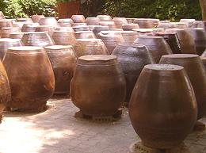
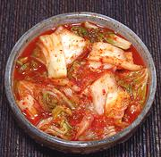

SAFARI
Users
 Kimchee is basically salt pickled vegetables, made very similarly to how sauerkraut is made in Germany and Poland. The earliest written reference to kimchee in Korea dates to the 12th century, but it has certainly been made there far longer. Kimchee for winter has traditionally been made up in the autumn, and placed in large ceramic jars which were often buried in the ground to protect them from the bitter cold of ice and snow. Photo by OlkhichaAppa distributed under license Creative Commons Attribution-ShareAlike v3.0 Unported.
While here in Los Angeles County, we have many Korean markets, and a
number of firms making top quality kimchee for them to stock in their
refrigerator cases, kimchee is also often made in the home, buecause it
is so easy, and there are so many varieties that are not in the stores.
Examples
Napa Cabbage Kimchee with Red Chili
This is what most people know as Kimchee. It can even be found in regular supermarkets, but be warned, supermarket kimchee is usually rather inferior. Kimchee is properly purchased from a Korean market in larger jars from the refrigerated cases. Dead kimchee is not so good.
Ingredients: Chinese Cabbage, Radish, Green Onion, Ginger, Garlic,
Red Pepper, Salt, Sugar, Water, Anchovy Extract, Shrimp, Sweet Rice
Flour.
Radish Cube Kimchee
- [Paek Kkatugi]
This winter kimchee is sufficiently popular that the local Korean
markets always have it in the refrigerated cases. It is easily made and
takes only a 4 day fermentation.
Radish Cube Kimchee.
Cucumber Juicy Kimchee
- [Oi Nabak Kimchi]
This easy to make, refreshing Kimchee is popular during the Summer. It
can be eaten right after it is made, with a dash of rice vinegar, but
I recommend giving it a full 3 days fermentation for best flavor.
Cucumber Juicy Kimchee.

Cabbage Cut & Jumbled Kimchee
- [Paech'u Mak Kimchi]
This all season kimchee is similar to the poppular Napa Cabbage Kimchee,
but is formulated to be easily made with a relatively short fermentation
time. For details see our recipe for
Cabbage Cut & Jumbled
Kimchee.

Cucumber Hot Spicy Kimchee
- [Oi Nabak Kimchi]
This one doesn't quite qualify as a Kimchee because it is not fermented,
but it is made so similarly it is called "Kimchi" in Korea
Cucumber Hot Spicy Kimchee
.